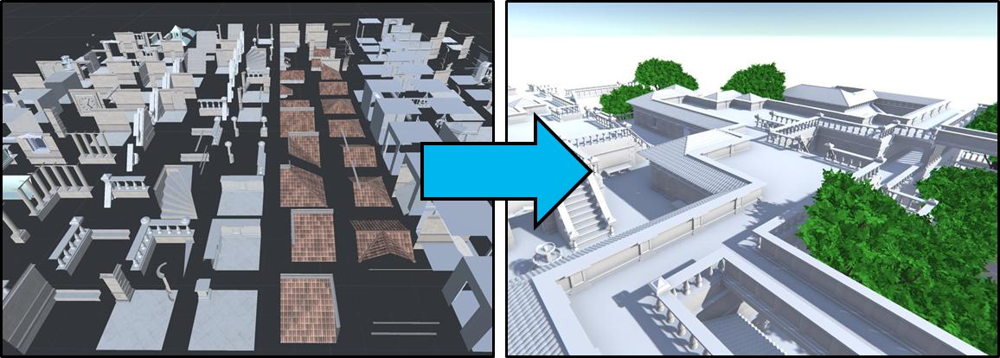
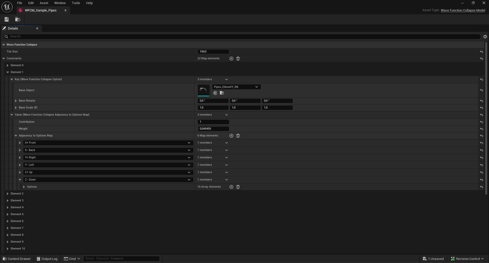
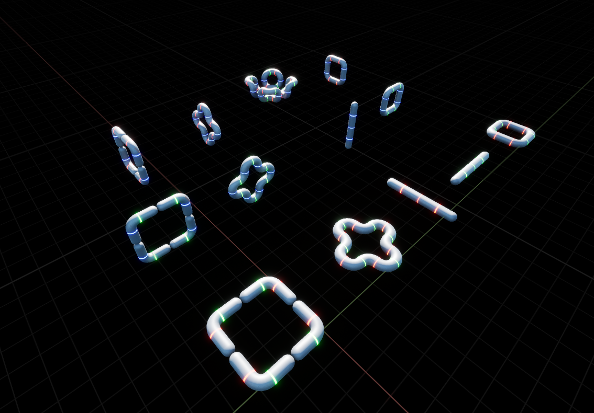
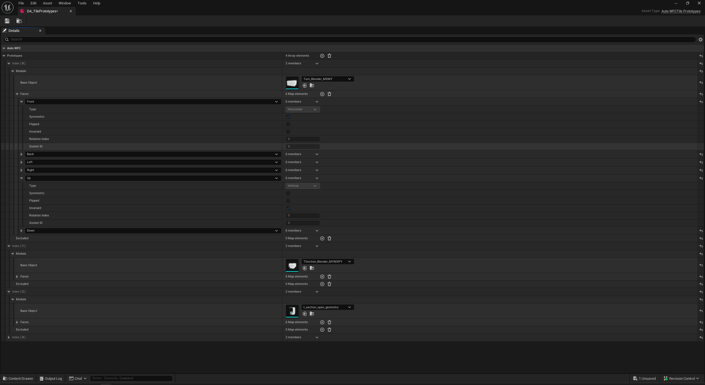
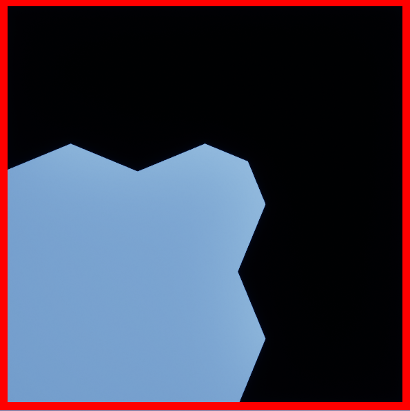
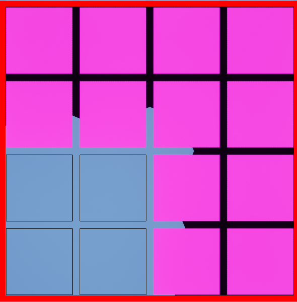

Wave Function Collapse Plugin
Imagine generating a level or world from a huge set of tiles in minutes. This Unreal Engine plugin makes that possible by identifying all the constraints automatically.
The problem
Wave Function Collapse is a procedural algorithm that turns modular tiles into a level or world.
The current workflow for using Wave Function Collapse starts with the artists. They make the tiles, so that they fit together nicely.

Then the assets are imported into the engine, but they don't work straight away. You need to create a set of rules that tells the algorithm which tile can fit next to which tile. These rules are also called constraints.
This set of constraints can be stored in a data asset. You give this data asset to the Wave Function Collapse algorithm, and it generates a level.


One way of creating this data asset is by letting the artist build a sample scene. This tells another algorithm which tiles can fit next to each other, and it can then create a data asset from that.
However, the problem is that making such a sample scene can take a lot of time, especially when there are a lot of tiles!
Existing solutions
Unreal Engine already provides a Wave Function Collapse plugin. It has everything in the workflow I just described, but that also means it doesn't solve the problem of sample scenes.
Outside of Unreal Engine, there are many articles and implementations of Wave Function Collapse in many different languages, including C++. The problem is that they don't fit Unreal Engine straight away, but they are a good source for creating the plugin.
My solution
The goal is to automatically convert all your assets, or tiles, into a data asset that works with the Wave Function Collapse algorithm.
First approach
My original approach was to use Epic's implementation as a reference and start by coding my own Wave Function Collapse algorithm. Later I realised it makes more sense to end with this algorithm, because I now had to finish the whole algorithm and create a data asset manually, just to test it.
This also affected the structure of the data asset, which made this approach much more difficult. It makes more sense to shape the data asset to fit the algorithm that identifies the constraints, which I will explain in the final approach.
Final approach
For the final approach, I focused on solving the problem I defined at the beginning of this blog: creating the data asset automatically from the tiles or assets.
To solve this problem, I created a new class: the Tile Validator. It figures out all the constraints for all the tiles and stores this data in a prototype data asset. At runtime, the Tile Cooker then cooks this into a model data asset. I will explain later why I decided to create a prototype data asset first.
In this approach, I also decided to use Epic's plugin as a base instead of as a reference. This speeds up the work on the automation, but limits performance, which I will discuss at the end of this blog.
Below is a diagram of the full high-level structure of the plugin.
Tile Validator
The Tile Validator is the core algorithm that makes this plugin automatic. It goes over all your tiles and gets all the faces of each tile. For each face, it first checks whether the face is horizontal or vertical. Horizontal faces, the sides of the tile, are checked for symmetry and whether they are flipped, which is extra information that gets stored per face. Vertical faces, the up and down of the tile, are checked for invariance: Does rotating this face make it align differently? If two tiles have the same face, they get the same socket ID.
All this data is stored in the prototype data asset. I decided to store it in this data asset first, instead of immediately creating a model data asset (suitable for the WFC), because this allows for much more flexibility. The user can change the prototype a bit and completely change the constraints, which makes it generate differently.
For example, the game Bad North has a similar approach: for certain levels it only allows simple tiles, while other levels add more complex tiles. This can also be achieved with prototypes. With my prototype, you can already disable tiles and exclude tile connections, and more is planned.

In-depth
Going through the code for this algorithm gets quite complex, which is why I have decided to explain it at a high level instead. Each face of the tile is calculated by intersecting the tile with 6 planes. This is done inside a grid, which makes it cheaper and also helps with tiny float or geometry errors. All the intersected geometry is put into an occupancy grid: a grid of cells that are either true or false.


This occupancy grid can then be turned into a hash. Faces with the same hash have the same geometry, but that does not mean they can match out of the box.
As explained earlier, a horizontal face is checked for symmetry. If the face is symmetric, it gets the same socket ID with its state set to symmetric. If it is not symmetric, the flipped state is set. This is figured out by mirroring the face and calculating its hash. The higher of the two hashes gets flipped set to true.
A vertical face is only checked for invariance. This is done by rotating the face 90 degrees and comparing the hash: if they are the same, the face is invariant. If they are different, the hash of every rotation is calculated, and the rotation with the smallest hash becomes index 0. The rotation index is the rotation of the vertical face.
Tile Cooker
The Tile Cooker is an additional algorithm that I had to implement to bridge the gap between the prototype and the model. As shown earlier, the prototype contains data about each face of a tile: whether it is symmetric, flipped or invariant, its socket ID, and more.
This data can't be used straight away by Epic's Wave Function Collapse algorithm, because their data asset has all the data cooked. That makes it heavier on memory, but faster at runtime. An additional advantage of cooking, instead of using the prototype as the model, is that it allows for more complex constraints. Working only with the face data of the tiles is not enough.
The basic idea of this algorithm is that it goes over all the tiles and their face data, and checks which faces can match with other faces to actually solve the constraints. This results in the Model Data Asset shown earlier.
The reason this algorithm runs at runtime is that it lets games modify the prototype and then cook a new model, for example with a certain tile now enabled, to create a different level.
Using the plugin
The plugin is made in Unreal Engine 5.8. It isn't released yet at the time of writing.
Setting up a tile set
- Open the AutoWFC window. You can find it under Tools → Procedural (next to the PCG tool).
- Optionally, create a prototype data asset and link it in the window.
- Choose the settings you want in the menu. Tip: every setting has a tooltip.
- Select all the tiles in the scene that you want to use for your prototype.
Generating
- Place an AutoWFC Grid Actor in the scene.
- Give it the prototype data asset.
- Create a model data asset. This stores the cooked results (see the graph inside the Blueprint).
- Press Play, and it should generate. Make sure to check the log for any failures.
Settings
These are the settings in the AutoWFC settings panel.
| Setting | What it does |
|---|---|
| Tile | |
| Tile Prototypes | The output data asset that the WFC can use. |
| Tile Size | Edge length of the uniform tile cube. Every face is Tile Size × Tile Size. |
| Cell Size | Edge length of a single occupancy cell on a face. |
| Face Depth | Distance inwards from each face plane within which geometry counts as touching that face. |
| Mips | The number of mips applied to the tile data, to lower the resolution and get more similar data. The mips use a lower base Cell Size when applied. |
| Fill Inner Geometry | Includes the inner geometry of the static mesh in the face hashing. |
| Debug draw | |
| Tile Bounds | Shows the bounds of the Tile Size around the static mesh. |
| Grid Cells | Shows the occupancy grid of all the cells at the set Cell Size. |
| Face Sockets | Shows the socket ID next to each face of a tile. |
| Settings | |
| Create Empty Tile | Creates an empty air tile. |
| Create Solid Tile | Creates a solid tile. |
Showcase
The examples below showcase the usage of the plugin and the levels that can be created by the plugin.
Performance
Future improvements
- Flexibility of the prototype. There are many things you can change in the prototype to change the generation, but changing it manually can still be a tedious process. This can be improved by making it more interactive through the AutoWFC window and appending changes to the model, like changing multiple faces or tiles at the same time.
- Visual display. The tiles in the scene can show their occupancy grid and socket ID, but I would like them to also show their states for symmetry, invariance and more. This helps spot connections and issues earlier, and could also make editing the prototype easier.
- Sample scene creation. Since the goal of this plugin was to eliminate creating the sample scene, it would still be nice to generate one from the model. This shows all the possible connections more easily and helps spot bad connections.
- Backtracking. A great optimisation that Epic Games' Wave Function Collapse algorithm lacks is backtracking. Currently it is quite slow, since it gives up in the middle of the generation when there is an impossible connection (a tile that has no possible options left).
Conclusion
This was my first time creating a plugin for Unreal Engine, and also my first time writing C++ inside Unreal Engine. I learned about the structure of plugins, how modules are set up, and the separation between runtime and editor code. On the C++ side, I learned about all the macros that come with Unreal Engine, and how to use its standard library, which can do quite a lot.
Sources
- Marian Kleineberg, "Infinite procedurally generated city with the Wave Function Collapse algorithm"
- marian42/wavefunctioncollapse on GitHub
- Christian Mills, "Notes on WaveFunctionCollapse for 3D" (summary of Martin Donald's video)
- Martin Donald, "Superpositions, Sudoku, the Wave Function Collapse algorithm"
- Adam Newgas, "Tessera: A Practical System for Extended WaveFunctionCollapse" (PCG Workshop 2021)
- Tessera Getting Started (face painting)
- PICO-8 simple tiled model with bitfield sockets